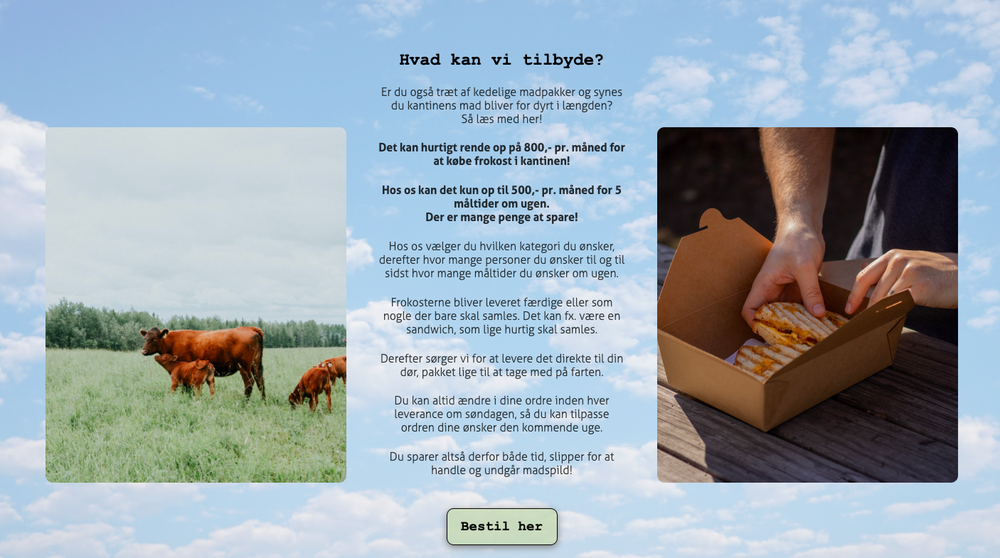

Favoritten

Siden blev kodet i 1. semester.
Siden er en viderefortolkning af et tidlige projekt som omhandlede
en iværksætterkonkurence.
Opgaven var under et tema der handlede om SoMe og branding.
Dette er mit svar på til den nye og forbedret side.